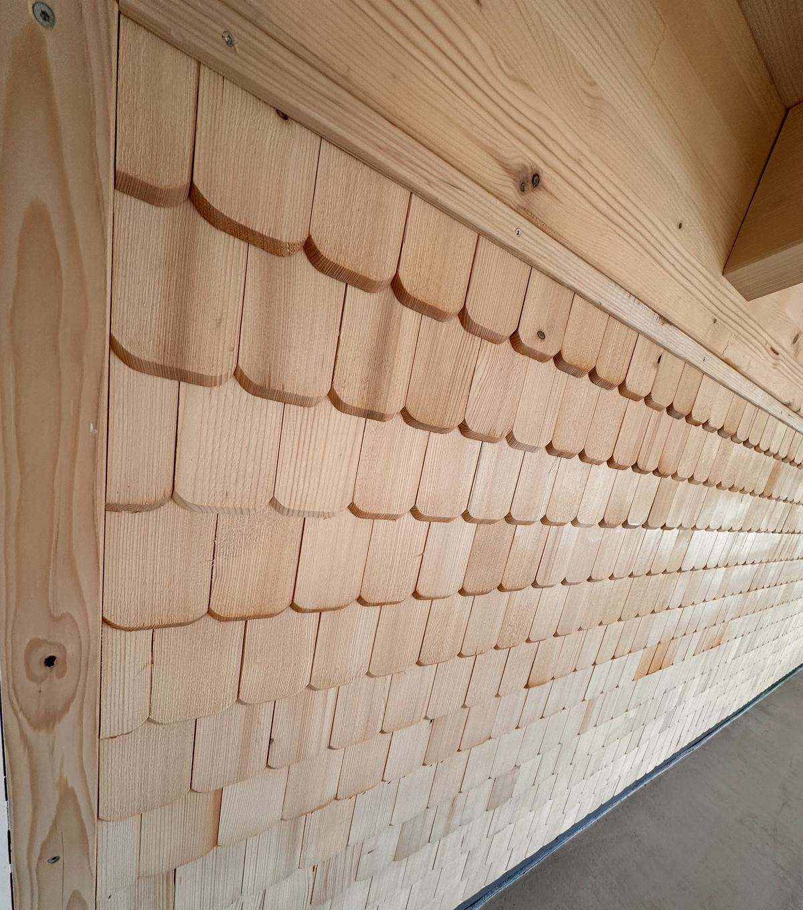

1. Eröffnung
Im Stil der neuen Posts und des Eröffnungsplakats: ruhig, hell, mit dem neuen Schneiders-Logo und Fotos in Rundbögen.
Entwurf ansehen
Hofladen & Hofcafé direkt am Hof.
2. Kräftig
Fotografisch und laut, im Grün des Hühnerhof-Logos. Große Bilder, große Schrift und die Hofbus-Tour als Routenlinie.
Entwurf ansehen
Unser Hofladen. Mit Café. Direkt am Hühnerhof.
3. Erzählend
Ruhig erzählt wie ein Magazin, in den Holztönen der Schindeln und dem dunklen Grün der Fassade.
Entwurf ansehen